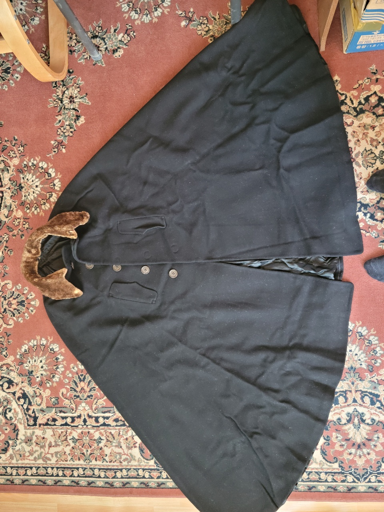

경기여고 경운박물관은 명문 공립학교의 부설박물관으로서도 그 전통과 규모 그리고 동문들의 열의(성화?)에 있어서 으뜸이라 할만하다. 이번에 4회째 기증전이 열렸고 초대관장이셨던 누님께서도 집안에 고이 모셔져 있던 예복등 여러점을 찾아내어 기증하셨다. 기증품 중에는 할아버지께서 만주와 일본을 넘나들며 활동하던 시기인 1900년대 근대식정장 망또가 있으며, 당대 최고의 의상디자이너 오리지널리 작품의 웨딩드레스, 그리고 형님과 나의 돌복 한복 一式, 아버님 한복등이 있다. 이 모두는 어머니가 긴긴세월 격변의 시기를 거치면서도 박스에 담아 고이 간직하신 덕으로 이제 박물관에서 빛을 발할수 있게 되었다.할아버지의 망또 (1900년대 초기)형님의 돌복(1951년). 당시 유행했던 홍콩양단의 5색화려함이 돋보인다.누님의 웨딩드레스 - 오리지널리 작품(1973).기증자는 64기 3인 이우경 송은승 이인경과 55기 이인숙으로 총 10점이다.경운박물관 부관장은 기증과정중에 친절을 베푸셨고 감사를 표하셨다.
학예사의 설명을 경청

망또(박스에서 바로 꺼내어 펼친 모습)기증물품 사진기록경기여고 100주년기념관과 경운박물관 전경